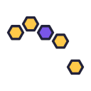
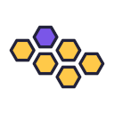
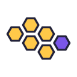
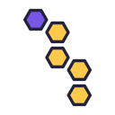

Platform Check, for comparison01 · Pyramid of six, purple on top02 · Pyramid of six, purple at the heart03 · Upturned pyramid04 · Pyramid of three05 · Rhombus of four06 · Rhombus lying down07 · Two rows, three and two08 · Two rows, three and three09 · Three rows, a slab

10 · Arch of five

11 · Comb fragment

12 · Comb fragment, purple at the edge13 · One tile lifting off the pyramid14 · One tile lifting out of the row

15 · Diagonal cluster16 · Propeller
Black
Platform Check, for comparison01 · Pyramid of six, purple on top02 · Pyramid of six, purple at the heart03 · Upturned pyramid04 · Pyramid of three05 · Rhombus of four06 · Rhombus lying down07 · Two rows, three and two08 · Two rows, three and three09 · Three rows, a slab10 · Arch of five11 · Comb fragment12 · Comb fragment, purple at the edge13 · One tile lifting off the pyramid14 · One tile lifting out of the row15 · Diagonal cluster16 · Propeller